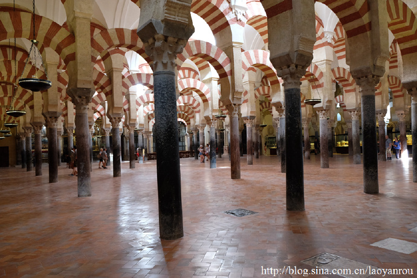
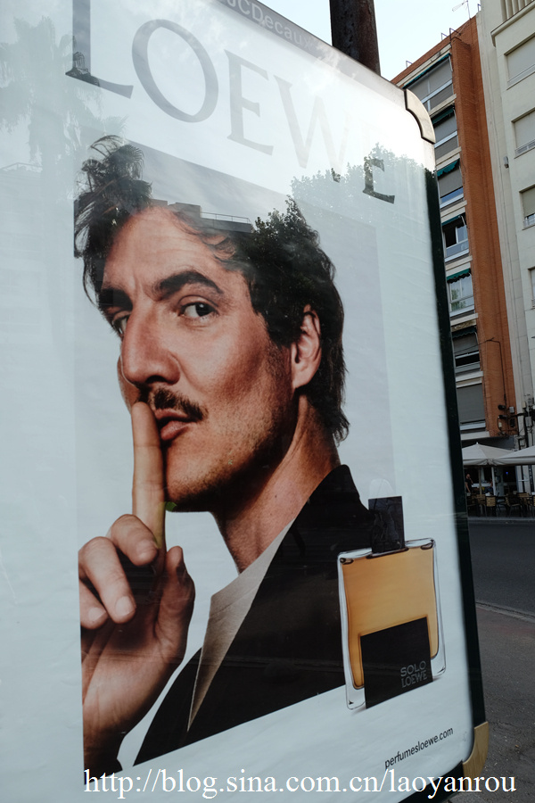

老腌肉的博客
73 篇文章 · 迁自新浪博客 · 全文存档
火舞西班牙 2020.02 · 14 篇
- 02-05欧游札记之火舞西班牙（Day1广州—巴塞罗那）Day1广州—巴塞罗那 火红激情的弗拉明戈、热血澎湃的斗牛士之舞、怪诞不经的建筑界奇才高迪、天马行空的超现实主义绘画大师…
- 02-05欧游札记之火舞西班牙(Day2奎尔公园—圣保罗医院—巴特略之家—加泰罗尼亚音乐厅—毕加索博物馆）奎尔公园 Day2广州—巴塞罗那—奎尔公园—圣保罗医院—巴特略之家—加泰罗尼亚音乐厅—毕加索博物馆 总所周知，高迪大爷是…
- 02-05欧游札记之火舞西班牙(Day3巴塞罗那—圣家堂—巴塞主教堂—哥伦布塔—奥林匹克港)圣家堂倒影 高大爷的扛鼎之作-圣家堂总算得以一睹为快，尽管在奎尔公园及圣保罗医院都远远地领略过其卓然而立的风采，但真走近…
- 02-06欧游札记之火舞西班牙(Day4巴塞罗那—蒙特惠奇城堡—巴塞罗那历史博物馆—诺坎普球场)蒙特惠奇城堡 Day4巴塞罗那—蒙特惠奇城堡—巴塞罗那历史博物馆—诺坎普球场 每到一个城市都想登高远眺，仿佛每次打仗都要…
- 02-06欧游札记之火舞西班牙(Day5塞维利亚—闲逛)塞维利亚主教堂 Day5塞维利亚—闲逛 初到塞维利亚正值晌午时分，刚下火车便深刻体验了塞维利亚的“热情似火”，简直仿佛来…
- 02-06欧游札记之火舞西班牙(Day6塞维利亚—黄金塔—塞维利亚王宫—主教堂—弗拉明戈博物馆—西班牙广场）西班牙广场 Day6塞维利亚—黄金塔—塞维利亚王宫—主教堂—弗拉明戈博物馆—西班牙广场 趁着清晨的清凉我们一大早便赶往瓜…
- 02-07欧游札记之火舞西班牙（Day7塞维利亚—西印度群岛综合档案馆—都市阳伞）Day7塞维利亚—西印度群岛综合档案馆—都市阳伞 塞维利亚的第二日行程基本囊括了所有精华景点，因此最后一日的安排尤为轻松…
- 02-07欧游札记之火舞西班牙（Day8格拉纳达—格拉纳达大教堂及王室礼拜堂—阿尔拜辛老城区）Day8 格拉纳达—格拉纳达大教堂及王室礼拜堂—阿尔拜辛老城区 作为科尔多瓦被基督徒收复后伊斯兰世界在西班牙的最后堡垒，…
- 02-07欧游札记之火舞西班牙（Day9格拉纳达—阿尔罕布拉宫）Day9 格拉纳达—阿尔罕布拉宫 天刚蒙蒙亮，我们便爬起床洗漱完毕吃完早餐，怀揣着提前几个月预定好门票便兴冲冲地向阿宫拾…
- 02-08欧游札记之火舞西班牙（Day10科尔多瓦——大清真寺）Day10 科尔多瓦——大清真寺 距格拉纳达仅两个半小时车程的安达卢西亚第三大城市—科尔多瓦，也曾有过辉煌的过去。自伊斯…

- 02-08欧游札记之火舞西班牙（Day11马德里——丽池公园）Day11 马德里——丽池公园 由于就住在高铁站旁边，我们一大早没花费多少时间便从科尔多瓦搭上了高铁前往马德里，沿途所见…

- 02-08欧游札记之火舞西班牙（Day12马德里——托莱多——马德里皇宫）Day12 马德里——托莱多——马德里皇宫 我们原计划在马德里呆四天左右，时间较为宽裕可以去邻近小镇走走，而托莱多小镇距…

- 02-08欧游札记之火舞西班牙（Day13马德里——塞哥维亚）Day13 马德里——塞哥维亚 挑了塞哥维亚作为马德里周边游的景点之一确实是我们无心之举，主要是贪图其近，仅半个小时的高…

- 02-08欧游札记之火舞西班牙（Day14-15马德里——普拉多博物馆——马约尔广场——太阳门广场）Day14-15 马德里——普拉多博物馆——马约尔广场——太阳门广场 尽管马德里贵为西班牙首都，但相比巴塞罗那来说却差了…

哈布斯堡荣光 2018.07 · 12 篇
- 07-18欧游札记之哈布斯堡荣光(Day1广州—慕尼黑—布拉格)Day1广州—慕尼黑—布拉格 只因尼采的那句经典名言“当我想以一个词来表达音乐时，我找到了维也纳；而当我想以一个词来表达…
- 07-18欧游札记之哈布斯堡荣光(Day2布拉格—旧城区—城堡区)Day2 布拉格—旧城区—城堡区 一觉睡得很香，加上时差原因，我们起了个大早。匆匆在公寓里解决了早餐，我们迎着布拉格清晨…
- 07-18欧游札记之哈布斯堡荣光(Day3库特纳霍拉—人骨教堂)Day3 库特纳霍拉—人骨教堂 来捷克之前LP早就嚷嚷着要去看布拉格附近库特纳霍拉小镇的人骨教堂，彼时心里颇有些不以为然…
- 07-18欧游札记之哈布斯堡荣光(Day4布拉格—犹太区—高堡区—CK小镇)Day4 布拉格—犹太区—高堡区—CK小镇 布拉格之旅的最后一日我们几经思量放弃了新城区而最终挑出了犹太区和高堡区这两个…
- 07-18欧游札记之哈布斯堡荣光(Day5CK小镇—维也纳)Day5 CK小镇——维也纳 第二天一早起来在别墅小餐厅与不知从哪里冒出来的几位住客同胞一起吃了个简单的自助早餐，满血复…
- 07-18欧游札记之哈布斯堡荣光(Day6维也纳—维也纳大学—霍夫堡—市政厅)Day6
维也纳—维也纳大学—霍夫堡—市政厅 一早起来用公寓厨房做了顿此行以来最正式的住家早餐，期待满满地打开大门踏进…
- 07-18欧游札记之哈布斯堡荣光(Day7维也纳—美泉宫)Day7
维也纳—美泉宫 美泉宫又称为熊布朗宫，是一座坐落于维也纳西南郊区庞大精美的巴洛克式宫殿建筑及花园群，曾被神圣…
- 07-18欧游札记之哈布斯堡荣光(Day8维也纳—梅尔克小镇—百水公寓)Day8
维也纳—梅尔克小镇—百水公寓 梅尔克一行原不在我们计划行程内，原计划是就近去斯洛伐克的首都转一下的。但LP参…
- 07-18欧游札记之哈布斯堡荣光(Day9维也纳—自然史博物馆—艺术史博物馆)Day9
维也纳—自然史博物馆—艺术史博物馆 一大早起床窗外阳光明媚，又到了憧憬与疲惫交加的充分考验我们体力和耐力的博…
- 07-18欧游札记之哈布斯堡荣光(Day10维也纳—萨尔茨堡)Day10
维也纳—萨尔茨堡 说起萨尔茨堡，给很多人的第一印象便是莫扎特的出生地，世界音乐之都，但它同时是个依山傍水、…
- 07-18欧游札记之哈布斯堡荣光(Day11萨尔茨堡—慕尼黑)Day11
萨尔茨堡—慕尼黑 如人生道路般兜兜转转我们又回到了此行的原点—慕尼黑，我们首先想去看的不是玛利亚广场、不是…
- 07-18欧游札记之哈布斯堡荣光(Day12慕尼黑—新天鹅堡—尾声）Day12
慕尼黑—新天鹅堡 说老实话，慕尼黑在二战盟军狂轰滥炸后所留下来的古迹屈指可数，唯一较为集中的地方就是玛利亚…
意大利朝圣 2017.06 · 14 篇
- 06-01欧游札记之意大利朝圣(DAY1米兰)Day 1
广州——米兰 序言：总算静下心来为今夏的意大利之旅小结一下了，因为工作原因一直拖，抑或只是逃避爬格子的借口…
- 06-02欧游札记之意大利朝圣(DAY2瑞士卢塞恩)Day 2 米兰——卢塞恩 由于出国前便在意大利铁路官网购买了米兰往返卢塞恩的9欧特价优惠车票并提前打印了出来，所以除了…
- 06-03欧游札记之意大利朝圣(DAY3瑞士交通博物馆)Day 3卢塞恩-瑞士交通博物馆 俗话说早起的鸟儿有虫吃，到卢塞恩的第一天早上我们起了个大早，在酒店吃完早餐便匆匆赶赴今…
- 06-04欧游札记之意大利朝圣(Day4瑞吉山)Day 4卢塞恩-瑞吉山-米兰 不知是否祈祷灵验了，一早上起来天气尚好，低压压的云间竟还露出了久违的一抹淡淡的蓝天，小兴…
- 06-05欧游札记之意大利朝圣(Day5米兰)Day 5米兰 人们提及米兰一般首先想到的是其现代“时尚之都”的名号，而较少人会想到它历史上曾是兵家必争之地的战略要地，…
- 06-05欧游札记之意大利朝圣(Day6维罗纳&威尼斯)Day
6米兰—维罗纳—威尼斯 自米兰往东前往水城威尼斯的路上，维罗纳只是一个规模不大的古老小城，却因为罗密欧与朱丽叶的…
- 06-07欧游札记之意大利朝圣(Day7威尼斯)Day 7
威尼斯 第二天一大早从车站附近的酒店走出来，艳阳高照下LP立马开始后悔昨天对威尼斯的评价。阳光真是大自然最…
- 06-08欧游札记之意大利朝圣(Day8佛罗伦萨)Day 8
佛罗伦萨 从水城威尼斯搭乘意大利高速火车来到翡冷翠也仅需两三个小时时间，还是喜欢用“翡冷翠”这个徐志摩赋予…
- 06-15欧游札记之意大利朝圣(Day9比萨&五渔村)Day 9佛罗伦萨—比萨—五渔村 连续好几天的城市人文风景欣赏所造成的审美疲劳令我们决定暂时找个地方亲近一下意大利的大自…
- 06-17欧游札记之意大利朝圣(Day10圣吉米尼亚诺)Day 10佛罗伦萨—圣吉米尼亚诺 领略过了海边风光，是时候深入托斯卡纳大区探访中世纪的小镇了，于是我们从翡冷翠搭乘火车…
- 06-19欧游札记之意大利朝圣(Day11佛罗伦萨&罗马)Day 11佛罗伦萨—罗马 吸取了乌菲奇美术馆的惨痛教训我们一大早就来到学院美术馆排队等候入场参观米开朗琪罗大师的雕塑，…
- 06-21欧游札记之意大利朝圣(Day12梵蒂冈)Day 12罗马—梵蒂冈 尽管已做好充分心理准备以抢滩登陆般的心态参观罗马的“国中国”也是全球天主教的中心-梵蒂冈，但当…
- 06-22欧游札记之意大利朝圣(Day13奥维耶托&天空之城)Day 13罗马—奥维耶托—天空之城 在梵蒂冈奔波劳碌一天想找个慢节奏的小镇小憩一会，于是乎我们盯上了罗马北边百余公里的…
- 06-23欧游札记之意大利朝圣(Day14罗马-尾声)Day 13罗马 不知不觉已经到了罗马景点行程的最后一天，是时候应应景将一些旅游团必去的旅游景点排到日程上来了，比如罗马…
徜徉法兰西 2015.10 · 25 篇
- 10-20欧游札记之徜徉法兰西(Day1巴黎凡尔赛宫&后花园)Day1 巴黎-凡尔赛宫&后花园 经历漫长十五小时航程后飞机于当地早上7点准时抵达巴黎，未曾想戴高乐机场海关早己人头攒动…
- 10-21欧游札记之徜徉法兰西(DAY2.1卢浮宫)DAY 2.1 卢浮宫 经过一晚饱睡的休整，我们满血复活地开启了第二天的行程“卢浮宫-圣母院-奥赛博物馆-罗丹美术馆”，…
- 10-22欧游札记之徜徉法兰西(DAY2.2圣母院-奥赛博物馆-罗丹美术馆)DAY 2.2 圣母院-奥赛博物馆-罗丹美术馆 简单在卢浮宫地下中央大堂旁的美食广场买了几份略带几分亚洲风味的法式快餐填…
- 10-23欧游札记之徜徉法兰西(DAY3.1橘园美术馆-荣军院-蓬皮杜艺术中心)DAY 3.1 橘园美术馆-荣军院-蓬皮杜艺术中心 经过第一天的缓冲和第二天的休息调整，我们基本把时差倒过来后开始挑战…
- 10-27欧游札记之徜徉法兰西(DAY3.2凯旋门-埃菲尔铁塔-先贤祠-卢森堡公园)DAY 3.2 凯旋门-埃菲尔铁塔-先贤祠-卢森堡公园 蓬皮杜艺术中心的其他楼层如四楼有一些当代艺术作品的展览，一楼是大…
- 10-27欧游札记之徜徉法兰西(DAY4.1阿维尼翁-阿尔勒)从酒店到巴黎里昂火车站也就3个地铁站的距离，去南法的火车基本都从这里出发。车站非常庞大，地下汇集着N多条地铁路线，地面的…
- 10-28欧游札记之徜徉法兰西(DAY4.2古罗马的阿尔勒)我们打开手机google地图定位后便离开阿尔勒车站开始了半日的游览。顶着烈日没走多远就看见了阿尔勒的古城墙，穿过长着零星…
- 10-29欧游札记之徜徉法兰西(DAY4.3凡高的阿尔勒)穿过了伫立着罗马方尖碑的共和广场，在古老的罗马式圣托菲姆教堂里面悄悄地转了一圈，我们便直接前往鼎鼎大名的凡高医院探寻其留…
- 10-30欧游札记之徜徉法兰西(DAY5.1 泉水小镇-塞农克圣母修道院)DAY5.1 泉水小镇-塞农克圣母修道院 在国内策划旅游行程的时候就已经知道阿维尼翁附近交通非常不靠谱，索性按其他南法攻…
- 11-02欧游札记之徜徉法兰西(DAY5.2 石头小镇-索村-阿维尼翁)DAY5.2 石头小镇-索村-阿维尼翁 远观石头城的时候发现它大约是由于建立在一座石山顶上且房屋建材大部分为石灰片岩而得…
- 11-03欧游札记之徜徉法兰西(DAY6.1阿维尼翁教皇宫)DAY 6.1 阿维尼翁教皇宫 据说到了阿维尼翁如果没去教皇宫的话就如同不到长城非好汉一样，因此我们第二天一大早即使被…
- 11-04欧游札记之徜徉法兰西(DAY6.2阿维尼翁圣贝内泽桥-马赛圣母守望院)DAY 6.2 阿维尼翁圣贝内泽桥-马赛圣母守望院 教皇宫的参观尽管意犹未尽，然而已订好中午火车票去马赛的我们由于行程…
- 11-05欧游札记之徜徉法兰西(DAY6.3马赛圣维克多修道院-马赛鱼汤)DAY 6.3 马赛圣维克多修道院-马赛鱼汤 下山的时候我们放弃了继续搭乘公交的想法，因为从山顶望下去港口就在山脚下，…
- 11-06欧游札记之徜徉法兰西(DAY7.1尼斯-摩纳哥)DAY 7.1 尼斯-摩纳哥 大清早便被设在四点半钟的闹钟叫醒，因为贪便宜且为了挤多些游玩时间便定了六点多的火车票去尼斯…
- 11-09欧游札记之徜徉法兰西(DAY7.2埃兹小镇)DAY 7.2 埃兹小镇 啃怕了面包的我们在摩纳哥城里按亲戚指引找了一家日本寿司店解决中午吃饭问题，颇领教了寿司店法国人…
- 11-10欧游札记之徜徉法兰西(DAY8.1戛纳)DAY 8.1 戛纳 大清早起来LP和小女就有点小兴奋，因为今天的行程安排是先去戛纳走走红地毯，接着到格拉斯香水小镇买点…
- 11-11欧游札记之徜徉法兰西(DAY8.2格拉斯香水小镇)DAY 8.2 格拉斯香水小镇 在车站没等多久我们便一起登上了开往格拉斯的巴士，在某个小镇巴士站，小伙子下车前爽朗的回头…
- 11-13欧游札记之徜徉法兰西(DAY8.3圣保罗小镇)DAY 8.3
圣保罗小镇 圣保罗•德旺斯小镇号称是世界上最美的山城之一，保留有大量中世纪风格的原生态建筑，曾吸引了毕加…
- 11-17欧游札记之徜徉法兰西(DAY9里昂老城-富维耶圣母堂-秘密通道-透视壁画)DAY 9 里昂老城-富维耶圣母堂-秘密通道-透视壁画 到了与南法说再见的时间了，一大早为了赶火车不得不放弃了那望眼欲…
- 11-18欧游札记之徜徉法兰西(DAY10.1阿讷西小岛宫)DAY 10.1 阿讷西小岛宫 说起我们在里昂的第二天行程要去的阿讷西小城，还颇有一番曲折的故事。最初是打算在里昂呆两…
- 11-19欧游札记之徜徉法兰西(DAY10.2阿讷西城堡)DAY 10.2 阿讷西城堡 或许单凭小岛宫的参观而推断当年贵族生存状态似乎有些片面，所以我们看完小岛宫后所安排的第二…
- 11-20欧游札记之徜徉法兰西(DAY10.3阿讷西湖)DAY 10.3 阿讷西湖 时间不早，我们登上游船开始了将近两个小时的游湖，据说这是每个来阿讷西的游客必作功课。等船离…
- 11-23欧游札记之徜徉法兰西(DAY11.1巴黎巴士底广场-圣母院)DAY 11.1 巴黎巴士底广场-圣母院 在法国南部晃荡了近一周后终于要回到既熟悉又陌生的巴黎，去还之前欠下的未能参观的…
- 11-24欧游札记之徜徉法兰西(DAY11.2加尼叶歌剧院-红磨坊-圣心堂)DAY 11.2 加尼叶歌剧院-红磨坊-圣心堂 了却了参观圣母院的心愿后，我们步行前往下一站加尼叶歌剧院，加尼叶歌剧院…
- 11-25欧游札记之徜徉法兰西(DAY12巴黎十三区塞纳河-后记)DAY12 巴黎十三区塞纳河-后记 天下无不散之宴席，徜徉巴黎之旅以我们最后一天在十三区漫步塞纳河为标记而悄然地落下了帷…
英国大学路 2015.10 · 7 篇
- 10-11欧游札记之英国大学路(第一日 爱丁堡一瞥)引子 老腌肉我本乃一静若处子之人，基本属于苟谈言笑的无趣大叔之流，但岁月荏苒、青春已逝后却依然感觉到心中总有那么一种悸动…
- 10-12欧游札记之英国大学路(第二日格拉斯哥大学&温德米尔湖)第二日 格拉斯哥大学&温德米尔湖 时差作怪，当地时间清晨四时半我们全已自然醒且毫无倦意，终究不幸被导游言中了。五时洗漱完…
- 10-13欧游札记之英国大学路(第三日 曼联主场&伯明翰大学)第三日
曼联主场&伯明翰大学 早上六点起床散步，昨夜大雨滂沱，一早出门仍见小雨淅淅沥沥，所以仅绕酒店周边转了一圈，不过…
- 10-14欧游札记之英国大学路(第四日 Bisburry乡村小路&牛津大学)Radison酒店住宿，晨五点半被闹钟唤醒，刚拉开窗帘满眼的霞光普照，顿时游兴大发。洗漱完毕拎上相机和LP直奔昨晚窗外所…
- 10-15欧游札记之英国大学路(第五日 剑桥大学&大英博物馆)第五日
剑桥大学&大英博物馆 牛津Buffer酒店晨起后四周闲逛，牧场周边的英国农民小屋即使略显陈旧简陋却也不乏个别装…
- 10-16欧游札记之英国大学路(第六日 大笨钟&白金汉宫)第六日
大笨钟&白金汉宫 清晨从希尔顿酒店早起散步，该酒店位于伦敦市郊离市区大约45分钟车程，典型的城郊结合部，尽管时…
- 10-17欧游札记之英国大学路(第七日 伦敦塔&温莎古堡)第七日
伦敦塔&温莎古堡 在英国的最后一天，早上天气阴晴不定，时雨时晴，幸好等我们来到颇具神秘色彩的伦敦塔及伦敦塔桥的…
随笔 2015.10 · 1 篇
- 10-10仰望雨中，落泪无痕！——谨以为开博之记…